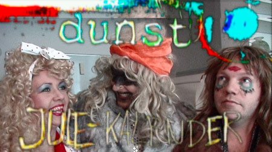

dunst Julekalender: jólini verða avnormali- serað, Mess, Færøerne.
|
 Listamaðurin Dennis Agerblad og ómetaliga flamboyanti trash-drag performance bólkurin hjá honum, dunst, fer frá týsdegnum av og heilt fram til jólaaftan at róta runt í siðbundna jólahugnanum. Hetta við sínum boði uppá ein alternativan jólakalendara, sum kann upplivast online í 24. pørtum frá 1.-24. desember. dunst lýsir seg sjálvt soleiðis á heimasíðu sínari: - Eitt sosialt netverk við initiativum. Eitt felag, eitt seksualpolitiskt, aktivistiskt, listarligt forum til allar hermafrodittar, transseksuell, transvestittar, lesbisk, bøssar, biseksuell og freaks, sum hava nakað uppá hjartað og tráða eftir at halda eina unika, orkumikla, litríka, larmandi og spennandi queer-undirgrund í Danmark. Hetta er fyrstu fer, at dunst ger jólakalendara, men ikki fyrstu ferð, tey fáast við sjónvarp.
- Nú eru vit farin í gongd við at gera jólakalendara, sum verður vístur online og á landsdekkandi donsku støðini Vesterbro Lokal TV. Hann snýr seg um, at dunst, ið hevur verið deytt í langa tíð, er um at vakna upp aftur. Jólatíðin er bundin av tradisjónum, men tað eru nógv fólk, ið liva onnur sløg av lívum, og hetta vísa vit á ein stuttligan hátt, sigur Dennis. Søgan fylgir trash-dragsunum í dunst ígjøgnum ein heilt vanligan desember mánaða. Mitt í allari jólafyrireikanini kemur ein mystiskur jólamaður og terroriserar endur-lívgaðu dunst limirnar, meðan nýggir dunst limir verða skrivaðir inn uppá teir merkverdugastu mátarnar higartil. Allir 24 partarnir rulla runt í rullusteik, transagávum og løgnum hendingum. Fatanin hjá hyggjaranum verður vend á høvdið, ryst sundur, savnað saman og síðani blandað uppí fría assosiatión um bandakríggj, politiskar skeivleikar, skitsofrenar tendensir og annað. Longu nú verður avdúkað, at partur nummar 24 fer at ganga fyri seg live í Bøssahúsinum á Christiania tann 18. desember. Parturin verður síðani kliptur saman og vístur online og í sjónvarpinum 24. desember. Leikarar í dunst Julekalender 2009:
Fylg við jólakalendaranum her ella her. Síggj trailaran til hann á hesum somu leinkjum.
|